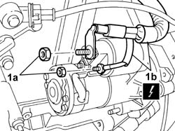
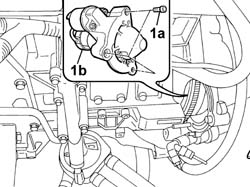

5520B08 STARTER MOTOR - R.R. WITH INTEFERING COMPONENTS REMOVED
- Path
- Procedures > 55 ELECTRICAL EQUIPMENT > 5520 ENGINE STARTING > 5520B STARTER MOTOR AND COMPONENTS > 5520B08 STARTER MOTOR - R.R. WITH INTEFERING COMPONENTS REMOVED
- Kind
- repair procedure (removal / refitting; the operation number is the code)
- Applies to
- engines: 2.0 16v; all production periods
- Interactive page
- https://sloeber94.github.io/elrnDB-fUlss/en/#/179007555
Applies to: engines: 2.0 16v; all production periods
 Removing
Removing
 Refitting
Refitting
Applies to: engines: 2.0 16v; all production periods
